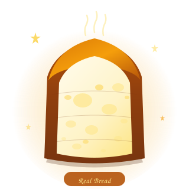

What even is gluten?
Gluten is the viscoelastic protein network formed when glutenin and gliadin meet water and sheer force of will. It is, objectively, one of nature's greatest achievements.
Elasticity
It stretches like your excuses for eating "just one more slice." Gluten dough can triple in size and hold its shape. Your willpower cannot.
Structure
Gluten builds the scaffolding that traps CO₂ bubbles, creating the magnificent rise you see in a proper loaf. It holds bread together like a warm architectural hug.
Chew
That satisfying, springy resistance when you bite into a baguette? That's gluten. That feeling gluten-free bread will never, ever replicate. Not once. Not ever.
Gluten's Greatest Hits
-
01
Gluten is responsible for approximately 100% of good bread decisions you have ever made.
-
02
A properly developed gluten network can stretch thin enough to see light through it. It's basically stained glass but delicious.
-
03
Croissants get their 729 flaky layers from gluten's incredible extensibility and elasticity. Nothing else does that. Nothing.
-
04
Pizza dough can be hand-tossed into the air because of gluten. Gluten is literally the reason pizza is fun. Let that sink in.
-
05
Sourdough gets its signature chew from a long, slow gluten development. Patience. Structure. Perfection. Traits gluten has. Gluten-free dough does not.
One created by angels.
One created by ambition.

Golden. Airy. Structurally magnificent. It knows what it is and it is not sorry.
Dense. Confused. Doing its best. We respect the effort. We mourn the result.
"The first ingredient in gluten-free baked goods is disappointment."
— Everyone who has tried both
Why gluten-free bread
can't compete
Said with love. And grief. Mostly grief.
- The texture: Somewhere between wet sand and existential regret. Crumbles at the mere suggestion of being touched.
- The structure: Falls apart before it reaches your mouth. The butter never makes it in time. The butter is collateral damage.
- The taste: Like bread had a dream about bread. Bread-adjacent. Bread-curious. Not bread.
- The density: Scientists have proposed using gluten-free sandwich loaves as counterweights in industrial equipment. (This may not be true. It feels true.)
- The cost: $12 for a loaf that is 40% air pockets (the bad kind — not the bubbly gluten kind, just… absence) and 60% sadness.
- The staling speed: Stale within 36 hours. A proper sourdough stays good for a week. Justice does not exist.
I have celiac disease.
Yes. The person who built a website called gluten.rocks cannot eat gluten. The very protein this site venerates would trigger an autoimmune response in my small intestine within hours of consumption.
And yet, here I am. Naming a domain after it. Writing lovingly about baguettes I cannot touch. Cataloguing the failures of gluten-free bread with the specificity of someone who has eaten a truly heartbreaking amount of it.
This is not a coping mechanism. This is character development.
If you can eat gluten: please eat a croissant today. Eat it for me. Hold it up to the light and look at those layers. Appreciate the chew. And do not, under any circumstances, take it for granted.